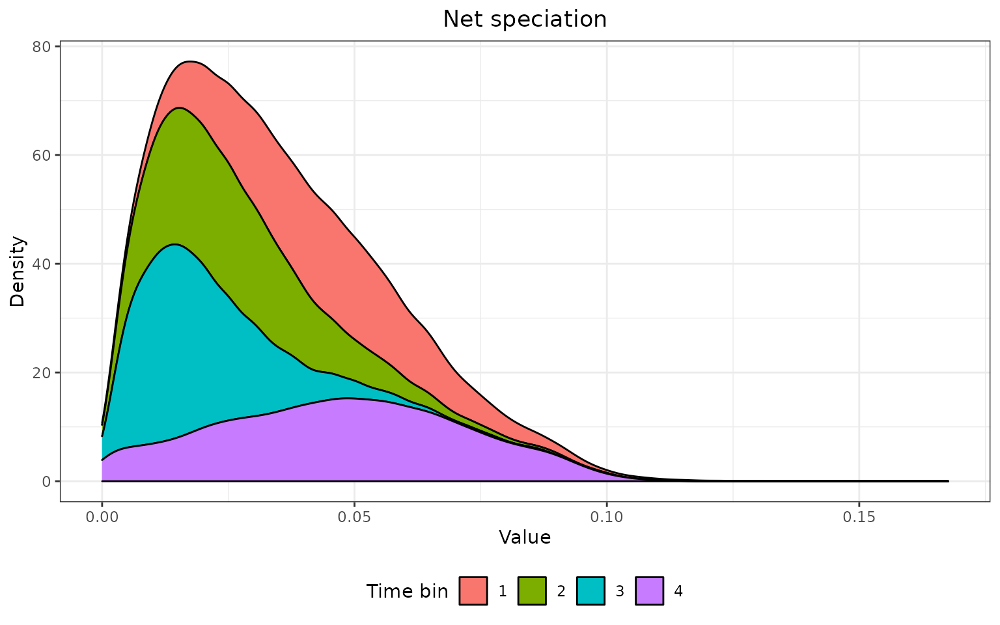
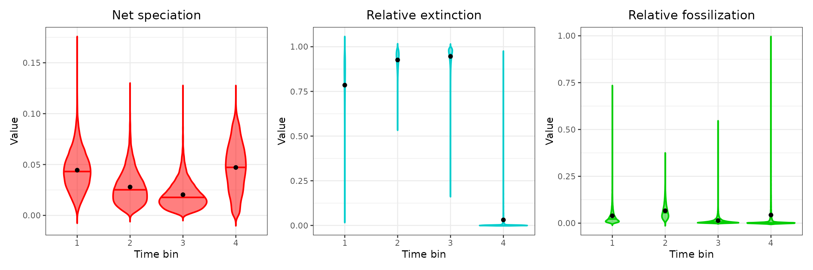
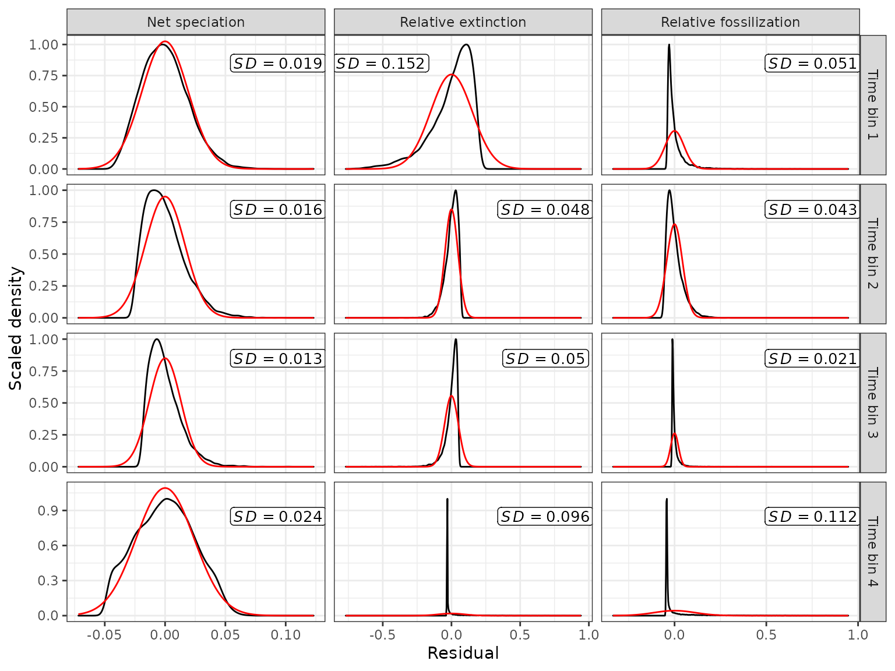
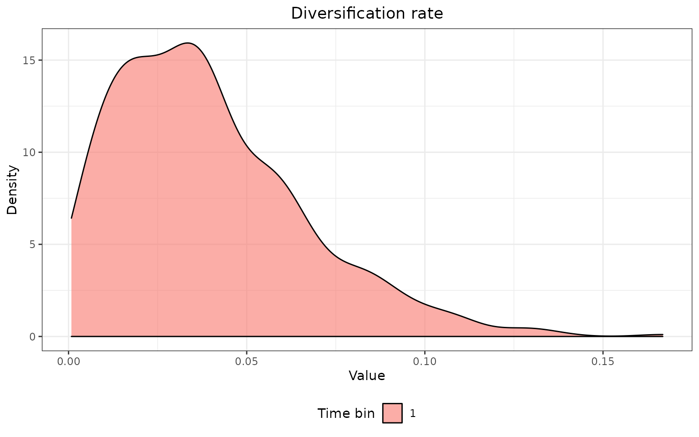
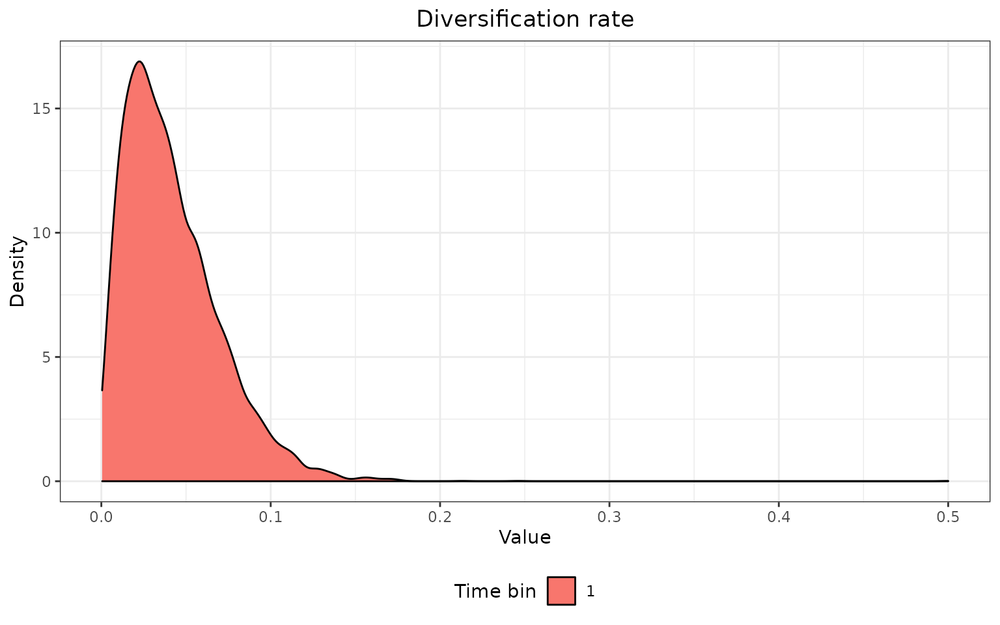

This vignette explains how to extract, plot, and statistically test for differences among BD (Birth-Death) or FBD (fossilized birth-death) parameters (e.g., net diversification, relative extinction (turnover), and relative fossilization) across the tree when using the Skyline BD or Skyline FBD tree models produced by the program Mr. Bayes or BEAST2 (SA or BDSKY packages).
Load the EvoPhylo package
FBD Parameters Statistics and Plots (Mr. Bayes)
Below we demonstrate how to extract evolutionary rate summary statistics from each node from a Bayesian clock (time-calibrate) summary tree produced by Mr. Bayes, store them in a data frame, produce summary tables, and plots.
1. Import combined log file from all runs.
This is produced by using combine_log().The first argument passed to combine_log() should be a path to the folder containing the log files to be imported and combined.
## Import all log (.p) files from all runs and combine them, with burn-in = 25%
## and downsampling to 2.5k trees in each log file
posterior3p <- combine_log("LogFiles3p", burnin = 0.25, downsample = 1000)Below, we use the posterior dataset posterior3p that accompanies EvoPhylo.
The posterior data must first be transformed from wide to long to be used with the functions described below; FBD_reshape() accomplishes this.
## Reshape imported combined log file from wide to long with FBD_reshape
posterior3p_long <- FBD_reshape(posterior3p, variables = NULL, log.type = "MrBayes")2. Summarize FBD parameters by time bin
Summary statistics for each FBD parameter by time bin can be quickly summarized using FBD_summary():
## Summarize parameters by time bin and analysis
t3.1 <- FBD_summary(posterior3p_long)
t3.1| parameter | Time_bin | n | mean | sd | min | Q1 | median | Q3 | max |
|---|---|---|---|---|---|---|---|---|---|
| net_speciation | 1 | 10000 | 0.04 | 0.02 | 0.00 | 0.03 | 0.04 | 0.06 | 0.17 |
| net_speciation | 2 | 10000 | 0.03 | 0.02 | 0.00 | 0.02 | 0.03 | 0.04 | 0.12 |
| net_speciation | 3 | 10000 | 0.02 | 0.01 | 0.00 | 0.01 | 0.02 | 0.03 | 0.12 |
| net_speciation | 4 | 10000 | 0.05 | 0.02 | 0.00 | 0.03 | 0.05 | 0.06 | 0.12 |
| relative_extinction | 1 | 10000 | 0.79 | 0.15 | 0.08 | 0.71 | 0.82 | 0.90 | 1.00 |
| relative_extinction | 2 | 10000 | 0.93 | 0.05 | 0.55 | 0.90 | 0.93 | 0.96 | 1.00 |
| relative_extinction | 3 | 10000 | 0.95 | 0.05 | 0.18 | 0.93 | 0.96 | 0.98 | 1.00 |
| relative_extinction | 4 | 10000 | 0.03 | 0.10 | 0.00 | 0.00 | 0.00 | 0.01 | 0.97 |
| relative_fossilization | 1 | 10000 | 0.04 | 0.05 | 0.00 | 0.01 | 0.02 | 0.05 | 0.72 |
| relative_fossilization | 2 | 10000 | 0.07 | 0.04 | 0.00 | 0.04 | 0.06 | 0.09 | 0.36 |
| relative_fossilization | 3 | 10000 | 0.01 | 0.02 | 0.00 | 0.00 | 0.01 | 0.02 | 0.54 |
| relative_fossilization | 4 | 10000 | 0.04 | 0.11 | 0.00 | 0.00 | 0.00 | 0.02 | 0.99 |
## Export the table
write.csv(t3.1, file = "FBD_summary.csv")3. Plot the distribution of each FBD parameter
Each of (or all) the FBD parameter distributions can be plotted by time bin using various plotting alternatives with FBD_dens_plot():
## Plot distribution of the desired FBD parameter by time bin with
## kernel density plot
FBD_dens_plot(posterior3p_long, parameter = "net_speciation",
type = "density", stack = FALSE)
## Plot distribution of the desired FBD parameter by time bin with
## stacked kernel density plot
FBD_dens_plot(posterior3p_long, parameter = "net_speciation",
type = "density", stack = TRUE)
## Plot distribution of the desired FBD parameter by time bin with
## a violin plot
FBD_dens_plot(posterior3p_long, parameter = "net_speciation",
type = "violin", stack = FALSE, color = "red")
## Plot distribution of all FBD parameter by time bin with a violin plot
p1 <- FBD_dens_plot(posterior3p_long, parameter = "net_speciation",
type = "violin", stack = FALSE, color = "red")
p2 <- FBD_dens_plot(posterior3p_long, parameter = "relative_extinction",
type = "violin", stack = FALSE, color = "cyan3")
p3 <- FBD_dens_plot(posterior3p_long, parameter = "relative_fossilization",
type = "violin", stack = FALSE, color = "green3")
library(patchwork)
p1 + p2 + p3 + plot_layout(nrow = 1)
## Save your plot to your working directory as a PDF
ggplot2::ggsave("Plot_regs.pdf", width = 12, height = 4)4. Test for assumptions
In this step, users can perform tests for normality and homoscedasticity in data distribution for each of the FBD parameters under consideration. The output will determine whether parametric or nonparametric tests will be performed subsequently.
##### Tests for normality and homoscedasticity for each FBD parameter for all time bins
t3.2 <- FBD_tests1(posterior3p_long)
### Export the output table for all tests
write.csv(t3.2, file = "FBD_Tests1_Assum.csv")The results of the Shapiro-Wilk normality test for each parameter can be output as seperate tables or as a single combined table.
# Output as separate tables
t3.2$shapiro
|
|
|
# OR as single merged table
t3.2$shapiro$net_speciation$bin <- row.names(t3.2$shapiro$net_speciation)
t3.2$shapiro$relative_extinction$bin <- row.names(t3.2$shapiro$relative_extinction)
t3.2$shapiro$relative_fossilization$bin <- row.names(t3.2$shapiro$relative_fossilization)
k1all <- rbind(t3.2$shapiro$net_speciation,
t3.2$shapiro$relative_extinction,
t3.2$shapiro$relative_fossilization,
make.row.names = FALSE)
k1all| parameter | statistic | p-value | bin |
|---|---|---|---|
| net_speciation | 0.9917 | 0 | Time bin 1 |
| net_speciation | 0.9385 | 0 | Time bin 2 |
| net_speciation | 0.9227 | 0 | Time bin 3 |
| net_speciation | 0.9898 | 0 | Time bin 4 |
| net_speciation | 0.9568 | 0 | Overall |
| net_speciation | 0.9874 | 0 | Residuals |
| relative_extinction | 0.8927 | 0 | Time bin 1 |
| relative_extinction | 0.9247 | 0 | Time bin 2 |
| relative_extinction | 0.8044 | 0 | Time bin 3 |
| relative_extinction | 0.3775 | 0 | Time bin 4 |
| relative_extinction | 0.7036 | 0 | Overall |
| relative_extinction | 0.8238 | 0 | Residuals |
| relative_fossilization | 0.5764 | 0 | Time bin 1 |
| relative_fossilization | 0.8853 | 0 | Time bin 2 |
| relative_fossilization | 0.6210 | 0 | Time bin 3 |
| relative_fossilization | 0.4637 | 0 | Time bin 4 |
| relative_fossilization | 0.5473 | 0 | Overall |
| relative_fossilization | 0.5531 | 0 | Residuals |
## Bartlett's test for homogeneity of variance
t3.2$bartlett| parameter | statistic | p-value |
|---|---|---|
| net_speciation | 3815.464 | 0 |
| relative_extinction | 18159.213 | 0 |
| relative_fossilization | 25654.975 | 0 |
## Fligner-Killeen test for homogeneity of variance
t3.2$fligner| parameter | statistic | p-value |
|---|---|---|
| net_speciation | 3748.140 | 0 |
| relative_extinction | 12599.843 | 0 |
| relative_fossilization | 4808.545 | 0 |
Deviations from normality can be displayed graphically using FBD_normality_plot():
## Visualize deviations from normality and similarity of variances
FBD_normality_plot(posterior3p_long)
## Save your plot to your working directory as a PDF
ggplot2::ggsave("Plot_normTests.pdf", width = 8, height = 6)5. Test for significant FBD shifts between time bins
Significant shifts in FBD parameters across time bins can be easily tested using parametric (Student’s t-test) and nonparametric (Mann-Whitney test) pairwise comparisons with FBD_tests2(). Both are automatically calculated and the preferred pairwise comparison will be chosen by the user depending on the results of the assumption tests step #4 (above).
##### Test for significant differences between each time bin for each FBD parameter
t3.3 <- FBD_tests2(posterior3p_long)
### Export the output table for all tests
write.csv(t3.3, file = "FBD_Tests2_Sign.csv")
## Pairwise t-tests
# Output as separate tables
t3.3$t_tests
|
|
|
# OR as single merged table
k3.3a <- rbind(t3.3$t_tests$net_speciation,
t3.3$t_tests$relative_extinction,
t3.3$t_tests$relative_fossilization,
make.row.names = FALSE)
k3.3a| parameter | Time_bin1 | Time_bin2 | n1 | n2 | p-value | p-value adj |
|---|---|---|---|---|---|---|
| net_speciation | 1 | 2 | 10000 | 10000 | 0 | 0 |
| net_speciation | 1 | 3 | 10000 | 10000 | 0 | 0 |
| net_speciation | 1 | 4 | 10000 | 10000 | 0 | 0 |
| net_speciation | 2 | 3 | 10000 | 10000 | 0 | 0 |
| net_speciation | 2 | 4 | 10000 | 10000 | 0 | 0 |
| net_speciation | 3 | 4 | 10000 | 10000 | 0 | 0 |
| relative_extinction | 1 | 2 | 10000 | 10000 | 0 | 0 |
| relative_extinction | 1 | 3 | 10000 | 10000 | 0 | 0 |
| relative_extinction | 1 | 4 | 10000 | 10000 | 0 | 0 |
| relative_extinction | 2 | 3 | 10000 | 10000 | 0 | 0 |
| relative_extinction | 2 | 4 | 10000 | 10000 | 0 | 0 |
| relative_extinction | 3 | 4 | 10000 | 10000 | 0 | 0 |
| relative_fossilization | 1 | 2 | 10000 | 10000 | 0 | 0 |
| relative_fossilization | 1 | 3 | 10000 | 10000 | 0 | 0 |
| relative_fossilization | 1 | 4 | 10000 | 10000 | 0 | 0 |
| relative_fossilization | 2 | 3 | 10000 | 10000 | 0 | 0 |
| relative_fossilization | 2 | 4 | 10000 | 10000 | 0 | 0 |
| relative_fossilization | 3 | 4 | 10000 | 10000 | 0 | 0 |
## Mann-Whitney tests (use if Tests in step #4 fail assumptions)
# Output as separate tables
t3.3$mwu_tests
|
|
|
# OR as single merged table
k3.3b <- rbind(t3.3$mwu_tests$net_speciation,
t3.3$mwu_tests$relative_extinction,
t3.3$mwu_tests$relative_fossilization,
make.row.names = FALSE)
k3.3b| parameter | Time_bin1 | Time_bin2 | n1 | n2 | p-value | p-value adj |
|---|---|---|---|---|---|---|
| net_speciation | 1 | 2 | 10000 | 10000 | 0 | 0 |
| net_speciation | 1 | 3 | 10000 | 10000 | 0 | 0 |
| net_speciation | 1 | 4 | 10000 | 10000 | 0 | 0 |
| net_speciation | 2 | 3 | 10000 | 10000 | 0 | 0 |
| net_speciation | 2 | 4 | 10000 | 10000 | 0 | 0 |
| net_speciation | 3 | 4 | 10000 | 10000 | 0 | 0 |
| relative_extinction | 1 | 2 | 10000 | 10000 | 0 | 0 |
| relative_extinction | 1 | 3 | 10000 | 10000 | 0 | 0 |
| relative_extinction | 1 | 4 | 10000 | 10000 | 0 | 0 |
| relative_extinction | 2 | 3 | 10000 | 10000 | 0 | 0 |
| relative_extinction | 2 | 4 | 10000 | 10000 | 0 | 0 |
| relative_extinction | 3 | 4 | 10000 | 10000 | 0 | 0 |
| relative_fossilization | 1 | 2 | 10000 | 10000 | 0 | 0 |
| relative_fossilization | 1 | 3 | 10000 | 10000 | 0 | 0 |
| relative_fossilization | 1 | 4 | 10000 | 10000 | 0 | 0 |
| relative_fossilization | 2 | 3 | 10000 | 10000 | 0 | 0 |
| relative_fossilization | 2 | 4 | 10000 | 10000 | 0 | 0 |
| relative_fossilization | 3 | 4 | 10000 | 10000 | 0 | 0 |
FBD Parameters Statistics and Plots (BEAST2)
1. Import combined log file from all runs.
The combined posterior log file from BEAST2 is outputted by LogCombiner from their software package. Our own function to combined log files combine_log is intended to work with Mr. Bayes posterior files only.
Below, we use the posterior dataset “Penguins_log.log” that accompanies EvoPhylo.
posterior <- system.file("extdata", "Penguins_log.log", package = "EvoPhylo")
posterior <- read.table(posterior, header = TRUE)
## Show first 10 lines of combined log file
head(posterior, 5)The posterior data must first be transformed from wide to long to be used with the functions described below; FBD_reshape() accomplishes this.
## Reshape imported combined log file from wide to long with FBD_reshape
posterior_long <- FBD_reshape(posterior, variables = NULL, log.type = "BEAST2")2. Summarize FBD parameters by time bin
Summary statistics for each FBD parameter by time bin can be quickly summarized using FBD_summary():
## Summarize parameters by time bin and analysis
t3.1 <- FBD_summary(posterior_long)
t3.1| parameter | Time_bin | n | mean | sd | min | Q1 | median | Q3 | max |
|---|---|---|---|---|---|---|---|---|---|
| diversificationRateFBD | 1 | 556 | 0.04 | 0.03 | 0.00 | 0.02 | 0.04 | 0.06 | 0.17 |
| turnoverFBD | 1 | 556 | 0.86 | 0.10 | 0.45 | 0.81 | 0.89 | 0.94 | 1.00 |
| samplingProportionFBD | 1 | 556 | 0.27 | 0.12 | 0.06 | 0.19 | 0.25 | 0.34 | 0.74 |
## Export the table
write.csv(t3.1, file = "FBD_summary_BEAST2.csv")3. Plot the distribution of each FBD parameter
Each of (or all) the FBD parameter distributions can be plotted by time bin using various plotting alternatives with FBD_dens_plot():
## Plot distribution of the desired FBD parameter by time bin with
## kernel density plot
FBD_dens_plot(posterior_long, parameter = "diversificationRateFBD",
type = "density", stack = FALSE)
## Plot distribution of the desired FBD parameter by time bin with
## a violin plot
FBD_dens_plot(posterior_long, parameter = "diversificationRateFBD",
type = "violin", stack = FALSE, color = "red")
## Plot distribution of all FBD parameter by time bin with a violin plot
p1 <- FBD_dens_plot(posterior_long, parameter = "diversificationRateFBD",
type = "violin", stack = FALSE, color = "red")
p2 <- FBD_dens_plot(posterior_long, parameter = "turnoverFBD",
type = "violin", stack = FALSE, color = "cyan3")
p3 <- FBD_dens_plot(posterior_long, parameter = "samplingProportionFBD",
type = "violin", stack = FALSE, color = "green3")
library(patchwork)
p1 + p2 + p3 + plot_layout(nrow = 1)
## Save your plot to your working directory as a PDF
ggplot2::ggsave("Plot_regs.pdf", width = 12, height = 4)